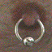
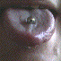
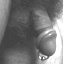
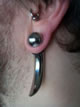
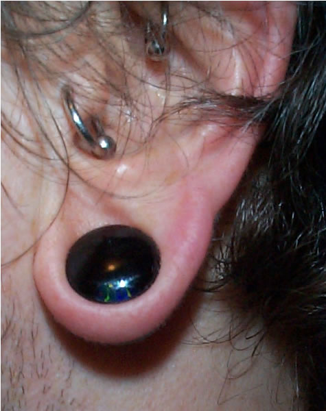

How I got here from there...
Since 1 December 1995, you are visitor number
This body was last modified on 30 March, 2002.
It was the start of an ongoing love affair, documented here in full! Some of the diary entries have links to my posts on rec.arts.bodyart and further pictures.
28 April, 1995
I had both nipples pierced by Teena Maree at Into You. I was really nervous but Teena was great and despite nearly passing out twice I was really pleased with the result. The initial piercing was done with 14ga (1.6mm) 5/8" Surgical Stainless Steel Captive Bead Rings.
29 July, 1995
It wasn't enough. I wanted something else. I pretty soon decided that I wanted my tongue pierced too. Not so nervous this time and it didn't hurt at all! The tongue heals very quickly too and it really is a lot of fun - guaranteed to stop that disgusting habit of chewing pens! The initial piercing was done with a 14ga SSS barbell.
Now that I've stretched up to 8ga (see 14 September 1996 below), I can put some pretty funky things in my tongue for decoration!
19 September, 1995
Pretty much immediately I wanted another piercing. It didn't take long to decide that I wanted a Prince Albert so on 19 September I went back to Into You to be pierced by Mark (Teena's currently in Burma).
This is a 10ga (2.5mm) 3/4" SSS CBR. No anaesthetic. Just a short, sharp poke with a 2.5mm hollow needle -- are you up for it?
Mark also changed my original tongue barbell for a shorter bar: the usual practice once the swelling has gone and the piercing is healed. [posting to rec.arts.bodyart]
5 December, 1995
I accompanied a friend to Into You. She was getting her inner labia pierced so I decided to have my nipples upsized to 12ga (2mm) 5/8" SSS CBRs. Mark did this with an insertion taper and it hurt!
19 March, 1996
I spent most of March in California and arranged to visit Pat Fish of Tattoo Santa Barbara to get my first tattoo. I'd seen Pat's work at Dunstable Tattoo Expo '95 and was very impressed. Everyone who's seen my Celtic anklet thinks it's beautiful -- even my anti-tattoo mother! [posting to rec.arts.bodyart, picture and background information]
20 April, 1996
Back to Into You... My nipples are upsized to 10ga 3/4" SSS CBRs. Cushla did this without a taper... it wasn't too bad. Cushla also upsized my tongue barbell from 14ga to 12ga. I decided to upsize because I'd been messing around, hanging things from my tongue bar and had ripped the hole slightly!
18 May, 1996
 Septum. 10ga. Done by Warwick at Asgard because Into You was closed. Amazingly painless!
I wear a steel retainer most of the time, because of my job, but I swap
that for more interesting jewellery when I go out and used to wear a 1 1/4"
SSS spike most of the time. [posting to rec.arts.bodyart,
A closer view]
Septum. 10ga. Done by Warwick at Asgard because Into You was closed. Amazingly painless!
I wear a steel retainer most of the time, because of my job, but I swap
that for more interesting jewellery when I go out and used to wear a 1 1/4"
SSS spike most of the time. [posting to rec.arts.bodyart,
A closer view]25 May, 1996
Reverse Prince Albert by Mark. 10ga 1" SSS CBR. This was the most painful experience of my entire life! (but see 7 September, 1998) [posting to rec.arts.bodyart, procedural pictures]
15 June, 1996
Tragus by Cushla. A small 14ga SSS CBR (see 18 January, 1997). Quite a tough bit of cartilage to pierce... It wasn't exactly painful but it certainly wasn't very comfortable.
29 June, 1996
Bought a 10ga 5/8" CBR for my septum and a 10ga 12mm long bar for my tongue. Hmm, the 12ga bar was 10mm long so the new bar may take some getting used to but it doesn't feel too different... 8ga here I come! And I finally bought some circlip pliers so I can change my own jewellery instead of bothering those nice people at Into You.
Today I recorded an interview for Cyber Cafe -- Meridian Television's programme about the weird and the wonderful on the 'net. About body piercing of course. The programme was shown in August on all independent channels. They've got a web page somewhere. I asked if I could put up screenshots and dialogue - I have the programme on video of course - but they didn't seem keen (they do have a link to this page, however).
24 August, 1996
Finally decided that my right nip ring is migrating and is too far forward for play so I took it out. *sniff*
26 August, 1996
Went to see Patrick of The London Piercing Clinic and he repierced my right nip nice and close to the base of the nip (I have quite big nipples). Same gauge and ring size (10ga) but in titanium. I'm happy again.
As an interesting experiment, I let Patrick use anaesthetic - a small injection which seems an odd idea given that it's only to stop you feeling another needle being poked into you! Patrick doesn't use forceps either, preferring to pierce by hand - he says the forceps cause too much tissue trauma. Well, it healed faster than any of my other piercings so I guess you can say it was a successful experiment! Patrick no longer uses anaesthetic though and has now developed a needle "gun" which people say is very effective. [posting to rec.arts.bodyart]
I realise I have a lot of spare rings and wonder what to do with them... idea! I decide to hang them all off my PA ring!
7 September, 1996
I decide that my left nip is also too far forward for rough play and take that out. What should I do with this 10ga 3/4" ring? Swap it with the 12ga 5/8" ring in my left lobe I think... After a struggle, I succeed in stretching it... ow! Which means another ring for my PA collection!
1 x 10ga 3/4", 2 x 12ga 5/8", 1 x 14ga 5/8"... looks wild!
14 September, 1996
SM Pride and Dungeon in the Sky. Amongst the stalls at ULU is a Wildcat jewellery stall... I can't resist... an 8ga, 12mm tongue bar... with large balls. At last, some internally threaded jewellery! It's a bit of a struggle to get the post all the way through but I manage it and with a little help from two friends get the ball screwed on. Hmm, it certainly feels more solid than the previous bar. Nice. My tongue aches for two days but I'm still happy.
16 September, 1996
Dunstable Tattoo Expo. More Wildcat jewellery. This time a sterling silver skull with ram's horns for my septum ring... now that looks creepy! :)
18 September, 1996
Bad news. The weight and movement of the rings on my PA has really irritated it so I concede to good health and remove the rings. Damn! At least it's had the desired effect of stretching the PA hole a bit ready for that move to 8ga...
28 September, 1996
...but it was still an eye-watering moment when Patrick changed the ring in my PA! It definitely looks better with a thicker ring but it makes the reverse PA looks very thin (see 7 September, 1998). He also swapped the reverse PA ring for a titanium one which should stop the last vestiges of irritation that the slow-healing steel ring was causing.
18 January, 1997
January saw me in California (again) and I took the opportunity to get my left nipple repierced, by Anne "Ardvark" Greenblatt of Piercing Exquisite. Anne greeted me with "Ooo, that tragus ring's too small!" and proceeded to change it for a larger diameter ring. After that, she said "Hi, good to meet you!". As expected, I passed out after the nipple piercing... much to Anne's amusement (and later to the denizens of 20 Tank Brewery where the San Francisco bodyart group held a munch!). I also wanted my guiche done but Anne said I wasn't built for it. However...
19 January, 1997
...I went back to Anne and persuaded her! She took some photos and I think the best one is this one. Was I built for it? Well, I've not really had any problems with it - apart from occasionally sitting down a bit too quick and catching it! - and it is quite an erotic piercing.
{kind=link}
Update: two years on and the guiche has migrated to the right slightly. It's still a bit uncomfortable at times (like, when I sit on it awkwardly) but even riding a motorbike hasn't dislodged it...
10 May, 1997
The guiche and nipple satisfied my urges for a while but less than four months later I was back in the chair. This time at Into You for a hafada. "Big" Katie did this and it was fairly painless. My plan was to have four done, two each side of the scrotum.
Unfortunately, my body didn't like this piercing one bit and after only two months of serious migration, I had to give in and take it out :(
4 October, 1997
 Arranged to take Anet, one of the girls from the office, along to Into
You to get her tongue pierced. Of course, I might as well get something
done too so I booked in to get a vertical bar in my right nipple (behind
the ring) and an upper cartilage on my right ear. This time it was Cushla
again and, apart from using too small a ring on the upper cartilage, as
she had on my troublesome tragus the year before, it all went very smoothly.
Arranged to take Anet, one of the girls from the office, along to Into
You to get her tongue pierced. Of course, I might as well get something
done too so I booked in to get a vertical bar in my right nipple (behind
the ring) and an upper cartilage on my right ear. This time it was Cushla
again and, apart from using too small a ring on the upper cartilage, as
she had on my troublesome tragus the year before, it all went very smoothly.I had to change the cartilage ring myself a few days later (well, I've got loads of spare jewellery) and it has now completely healed (January '98). [A closer view]
2 May, 1998
 Back to Into You because Anet wanted her (left) nipple pierced so
I decided to get another ear piercing. Again, Cushla, and this time no doubt
about the size of the ring. [A closer view]
Back to Into You because Anet wanted her (left) nipple pierced so
I decided to get another ear piercing. Again, Cushla, and this time no doubt
about the size of the ring. [A closer view]By mid-September, this had become badly infected three times and suddenly began to migrate - I took it out :(
7 September, 1998
Back to California, this time with my mum for a two week fly-drive. We started in San Francisco so another visit to Anne Greenblatt was in order. This time it was to get my reverse PA stretched to 8ga and to have a rook in my left ear. The stretch was my most painful ever (oh, there's a surprise... pushing a 3.2mm taper through a 2.4mm hole in your glans is bound to be easy, right?). I hyperventilated and lost all the feeling in both hands - which went totally rigid - for about 15 minutes! *sigh*
After that, the rook was easy! Apart from a very slight migration of the top (entry) hole, it's been fine and I was able to sleep on it within a few days.
5 October, 1998
Back to California on business (it's a hard life!). This time, Santa Cruz, but it's near enough to San Francisco that I had to visit Anne again! I'd removed my daith in mid-September and wanted it pierced again. Anet moved to Modesto, CA at the end of August to be with (the other) Sean that she met through the 'net so they both came with me. Anet wanted her right nipple done.
Anne examined my right ear and decided that there was still some residual infection and advised against piercing it so soon. No daith! I was gutted!
Anet had her nipple done and her left one changed to titanium. I had to have something done so we decided to stretch my left earlobe to 8ga (3.2mm). A bit uncomfortable and it was irritable for about a week afterwards but it looks great. I also bought a 6ga ring and a taper for the next stage...
7 November, 1998
Saturday afternoon, bored. What shall I do? Must be time to stretch that lobe again! I took it much slower with the taper than Anne had (OK, so I'm a wuss!) and it was fairly painless. Actually, the hardest part was opening the ring enough to get the bead back in - my circlip pliers are only just up to dealing with 6ga (4mm) steel! The plan is: stretch to 4ga (5mm) then maybe to 2ga (6mm) and put a flesh tunnel in. Keep watching this space!
7 August, 1999
After a long period of inactivity (in terms of piercing!), I found myself once more in California so I had to visit Anne at Piercing Exquisite and I got my daith repierced.
It's been very troublesome and as of early March 2000 it still hasn't healed. My wife says I should stop poking it with dirty fingers...
24 March, 2001
There have been no new piercings for a long time. I've been working on stretching my lobe piercing tho' and today my 00ga ball claw arrived from Anne at Piercing Exquisite. My previous claw was 2ga with a 3/8" bead and the bead had been falling through the hole! In theory, the 00ga claw should have been quite a stretch but it went in very easily. [A closer view]
30 March, 2002
 Still no new piercings. I changed my PA and reverse PA for a bar and then left it out for a while and the reverse PA closed up. Recently I stretched the partially-closed PA hole open again and put back the 4ga ring. Finally went and did something about the lobe piercing - the 9/16" bead on my 00ga claw was pretty much all the way through the lobe so it was time to move to a glass plug. The actual plug is 7/16" but the flanges are (obviously) wider. The plug has a black background with an opal in it - you can't really see how good it looks from the picture. I got it from Gottsi on Telegraph Ave in Berkeley. They have a great range of jewelry and seem very knowledgeable and friendly. [A closer view]
{kind=link}